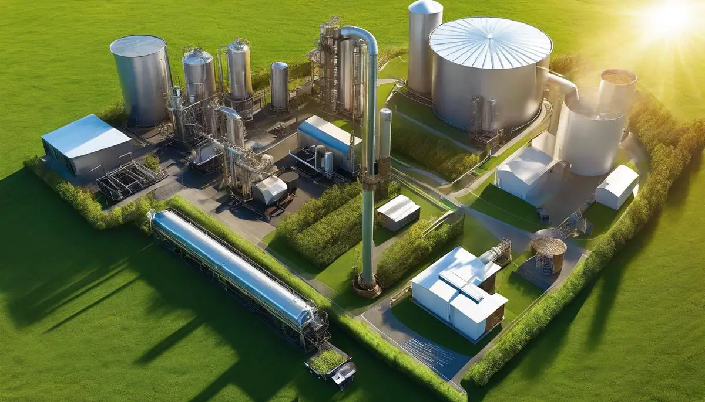

Valuable for businesses keen on investing in CBG plant
India has big ambitions for CBG; thousands of businesses and entrepreneurs wish to put up CBG plants. The demand for CBG is massive.
But feedstock is a challenge - relying on food waste and animal waste cannot scale this business.
Enter biomass such as paddy straw, napier grass and agri residues
These are available in plenty and have good supply chains.
But all these are lignocellulosic biomass, and thus need to be pre-treated before they can be used in a digester.
Hundreds of entrepreneurs have approached the BioBiz division of EAI wanting to know more about CBG from Napier Grass, Miscanthus, Paddy Straw etc.
They have lots of questions, many doubts about use of these biomass.
We hence are putting together a special webinar on:
Use of Napier Grass, Paddy Straw, Agri Waste for CBG

20 Dec 2024
Who will benefit?
Companies and entrepreneurs keen to invest on a CBG production facility anywhere in India.